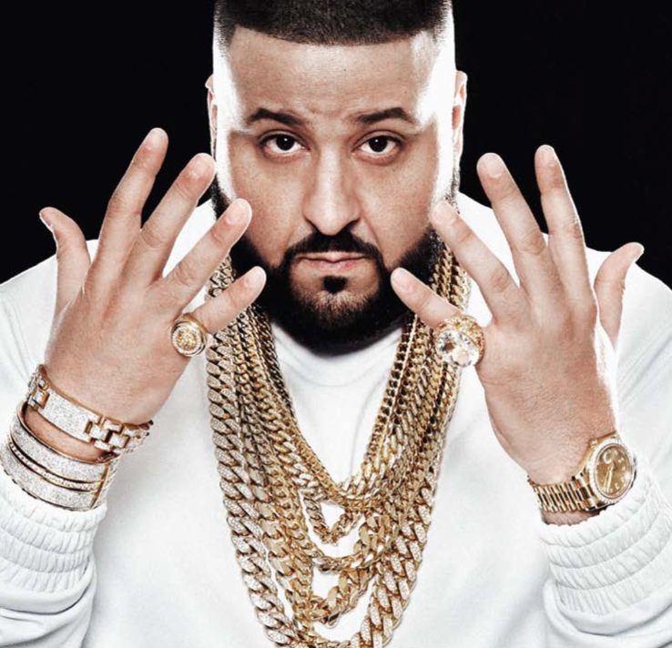

17,327,692 Monthly Listeners

DJ Khaled
About Artist
No overnight success, Khaled Mohamed Khaled toiled as a DJ for years prior to becoming an immensely successful, larger-than-life figure in rap music. During the latter half of the 2000s and throughout the following decade, surrounded by an ever-shifting cast of high-profile associates, Khaled factored into several of the rowdiest and most triumphant crossover rap hits. His first nine albums, released from 2006 through 2016, peaked within the Top Five of Billboard's rap chart, supported by singles that often seemed like events. Many of the genre's biggest names, including Rick Ross, Drake, and Jay-Z, eagerly took part. Cynics noted that Khaled rarely produced or wrote material and wondered if he did more than yell, self-promote, and flaunt. Meanwhile, others were having too good a time to care, charmed by Khaled's fun-loving spirit and/or the well-placed talent that flanked him.
The son of Palestinian immigrants, Khaled spent the first years of his life in New Orleans, Louisiana. His family moved to Orlando, Florida, where, at the age of 13, he started to learn how to DJ in his supportive parents' garage. Due to financial hardship, Khaled's family returned to New Orleans. While still a teenager, Khaled briefly worked at the city's Odyssey record store, networking with rising rap artists like Birdman and Lil Wayne and, to the dismay of his boss, running up the phone bill by placing long-distance calls to record labels. Khaled went back Orlando, then headed south to Miami and struggled to establish himself as a DJ in the reggae soundclash circuit. At Miami pirate radio station Mixx 93, Khaled approached the on-air DJs and asked for a portion of their time slot. Marcello Valenzano and Andre Lyon, who were on the brink of leaving town and becoming known as production duo Cool & Dre, obliged. Khaled made the studio his home and became an exuberant force on the city's airwaves. His reach extended with mixtapes and club gigs. He received a boost from Luther Campbell, who brought him on as a regular DJ for WEDR's The Luke Show, and was eventually granted a station slot of his own, shortly after he received his first production credits.
Emboldened by his increasing popularity and number of connections, as well as his status as the DJ for Terror Squad, Khaled put together his first official mixtape, which led to a long streak of commercially successful proper albums. Debut full-length Listennn: The Album (2006), released through Koch, was a modest success due to the Afrika Bambaataa-sampling Cool & Dre production "Holla at Me." It hit the Top 20 of Billboard's rap chart and, like all Khaled hits that followed, involved several rappers. Khaled remained with Koch/E1 for three additional albums that placed a total of four singles in the pop Top 40: "We Takin' Over," "I'm So Hood," "Out Here Grindin'," and "All I Do Is Win." Made with a combined total of 14 rappers and seven producers, these anthems earned Khaled several gold and platinum certifications. Birdman, who was among the crew heard on the first of the big hits, added Khaled to the Cash Money roster for a period that entailed three additional albums: We the Best Forever (2011), Kiss the Ring (2012), and Suffering from Success (2013). Only "I'm on One" and "No New Friends" were added to Khaled's stack of Top 40 hits, but the parent albums either reached or nearly missed the top of the Billboard rap chart. After a one-album stint with Sony's RED division, which yielded I Changed a Lot (2015) and its "Hold You Down," Khaled moved to major label Epic for Major Key (2016). Prefaced with "For Free" and "I Got the Keys," his seventh and eighth Top 40 singles, the album debuted at the top of the Billboard 200. Only nine months later, Khaled released the Beyoncé and Jay-Z collaboration "Shining" as the first single off Grateful (2017). The album's second single, "I'm the One," put Khaled at the top of the Hot 100 beside guest stars Justin Bieber, Quavo, Chance the Rapper, and Lil Wayne. A third single, "Wild Thoughts" featuring Rihanna and Bryson Tiller, peaked in the top three of the Hot 100, topping the Dance Club, R&B/Hip-Hop, and Rhythmic charts. In early 2018, in the midst of a tour together, Khaled and Demi Lovato collaborated on "I Believe" from the soundtrack to the film A Wrinkle in Time. ~ Andy Kellman, Rovi